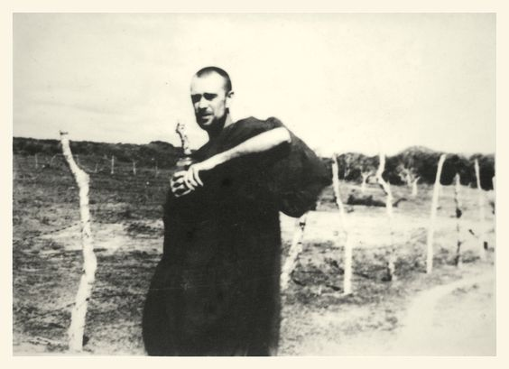

Nanavira Thera
The Hermit of Bundala
The Hermit of Bundala
A few years ago, I hired a ‘safari’ jeep to take me into the Bundala National Park, one of the world’s great bird reserves, on the south-east coast of Sri Lanka. After twenty minutes, the jeep broke down. The driver and guide soon became anxious. With darkness about to fall, they explained, the mosquitoes would soon be swarming and the Russell’s vipers had already begun their evening’s hunting. Rescue eventually arrived, but I left the Park with a strong sense not just of its beauty but also of the danger of the place.
It would have been a still more dangerous place sixty years earlier when local villagers built a tiny bungalow, or kuti, in the jungle for a Cambridge educated, ex-British army officer to live in. Not yet a National Park, it was a wilderness that teemed with elephants, leopards and wild boar, and a much larger population of snakes and crocodiles than today’s.
The villagers knew the man, not as Captain Harold E. Musson, but by the name and title given him when ordained as a Buddhist monk in 1950 — Nanavira (pronounced ‘Nyarnaveera’) Thera (Elder). The son of a wealthy career army officer, Harold was born in 1920 and educated at English boarding schools before studying Italian and French at Cambridge. On leaving university, he joined up and was assigned to the Intelligence Corps, serving in Algeria and Italy, where his linguistic skills were used in interrogating prisoners of war. His knowledge of Italian also enabled him to read, at the end of the war, a remarkable book on Buddhism that he was later to translate and that decisively affected his future — Julius Evola’s The Doctrine of Awakening.
In the immediate post-war years in London, Musson — who didn’t need to work for a living — oscillated between translating this book and, as he recalled, ‘an orgy of wine, women and song’, often in the company of a wartime colleague, Osbert ‘Bertie’ Moore. Disillusioned by their aimless, dissolute existence, and inspired by an article they’d read about a group of European Buddhist monks in Ceylon, the two friends abruptly left England in 1948 and joined this small community in the Island Hermitage, near Hikkaduwa, founded and still presided over by a former German violinist and composer, Nyanatiloka Thera.

During his years at the Hermitage, Nanavira learnt Pali, made a close study of the Buddha’s discourses, but also and more singularly extended his knowledge of European philosophy, focussing especially on existentialist authors, including Kierkegaard, Heidegger, Sartre and Camus. In 1955, however, he decided ‘to get away from books and practise what I am now preaching’, essentially through uninterrupted meditation or, as he preferred to call it, ‘mental concentration’, on the Buddha’s teachings.

His plan was to be only partly realised. Despite the surrounding dangers, the Bundala kuti that he moved into in 1957 appeared to be a suitable location for meditative practice — dry and warm, peaceful and isolated. The local villagers brought him food, kept the bungalow in good repair, and regarded the tall, handsome and courteous monk with a mixture of affection and awe. He seems, too, to have established a remarkable rapport with the animals that visited the bungalow, including elephants and even vipers. But the plan ‘alas! … also needs good health’, he wrote, and this was denied to Nanavira. He suffered from severe and chronic intestinal disorders, compounded by satyriasis, probably caused by the medicines he took.
Erotic fantasies and stomach pain were, as his biographer drily remarks, ‘unwelcome problems’ for a monk, so much so that Nanavira concluded that he should either disrobe or commit suicide if he could no longer practise mental concentration. ‘Wife or knife?’, as he laconically posed the alternatives. On July 5th 1965, he finished reading Heidegger’s Being and Time, wrote a perfectly composed letter to a friend, and then killed himself, lucid to the last moment, by releasing ethyl chloride into a cellophane mask which he had tightly wound around his head. In earlier letters, he justified his anticipated suicide on the grounds that he had become, some years before, a ‘stream-enterer’ — someone whose insight into the Four Noble Truths guarantees full enlightenment and liberation in no more than seven future rebirths. The Buddha, Nanavira argued, did not automatically condemn suicide on the part of such persons.
If there was a silver lining to Nanavira’s ‘unwelcome problems’, it’s that, except for them, he would not have produced the writings — a book and a voluminous correspondence — that he did. He could, it seems, successfully suppress his intestinal pain and sexual desire when writing in a way that he could not when trying to practise sitting or walking meditation.
Notes on Dhamma (1960-1965), and the many letters that amplify its often gnomic remarks, present an interpretation of the Buddha’s teachings that is as radical as the book, by Evola, that first inspired Nanavira’s interest in Buddhism. They do not, as their author knew and intended, make for easy reading, and today the thoughts they express are familiar to many readers mainly through works by Stephen Batchelor, whose own controversial understanding of Buddhism, as he readily concedes, owes much to Nanavira’s proposals.
Of considerable interest in themselves, these proposals concern us, however, primarily for the light they cast on Nanavira’s adoption of a hermit’s life. Even by hermit standards, his biography is a striking one. The story of a transformation from an army intelligence officer to a priapic, suicidal Buddhist monk living in isolation in a remote jungle sounds like one dreamt up by a writer of fiction. (The author, Robin Maugham, who visited Nanavira in 1965, managed to concoct part of a novel and a radio play on the basis of the meeting.)
But what is especially intriguing for students of eremitism is the intimate interplay of personal motives and philosophical commitments behind Nanavira’s decision to live alone. For it was not a decision that is fully explained by a desire to practise mental concentration. After all, most Buddhist meditators, like those at the Island Hermitage, are not solitaries.
‘I want nothing — except to be left alone’, Nanavira told Maugham.
Elsewhere he describes himself as a ‘blackleg’ and someone ‘estranged’ from everyday social life. There is little doubt, then, that he was by temperament a ‘loner’. Acquaintances described him as aloof and cold — seemingly indifferent, for example, to the deaths of his mother and his old friend ‘Bertie’ (by then Nanamoli Thera, the renowned translator of Pali texts). He appears, too, to have been unusually self-reliant, finding in himself his only ‘centre of gravity’, and fond of Zhuangzi’s remark that ‘he who needs others is for ever shackled’.
We know, as well, that Nanavira found communal life at the Island Hermitage difficult in a number of respects. In one letter, he explains his dilemma: to argue with his fellow monks about the Buddha’s message might distress both them and him, while remaining silent would be a kind of self-betrayal.
He was uncomfortable, too, with the religious rituals that the monks were expected to perform together. Nor did he feel any enthusiasm for the pastoral duties and services to the local community that the monks were also sometimes expected to carry out.
It is no great surprise that with this temperament, and these aversions and predilections, Nanavira was ready, after his years at the Island Hermitage, to give trial to a solitary existence. Yet it would be difficult to isolate these factors from the philosophical understanding of Buddhism that he was developing during these years. Indeed, it is perhaps impossible to know the extent to which taste and temperament both shaped and were shaped by his conception of the proper approach to the Buddha’s teachings.
This conception is dramatically announced in the Preface to Notes on Dhamma. To gain any entry to and any profit from the Suttas, a reader must be ‘subjectively engaged with … the problem of his existence, which is also the problem of suffering’. There could be no point in reading the Suttas unless one is ‘disquieted by existential questions about [oneself] and the world’. After all, the Buddha himself insisted that he taught only the truth of suffering and its cessation. The reader should not be looking for a detached, scientific or ‘horizontal’ account of the world — of time, space, history, and human life in general: rather, with the help of the texts, he should take a ‘vertical view, straight down into the abyss of his own personal existence’. What he discovers down there — unless he draws back in dismay and seeks ‘refuge in distractions’ and bad faith — is suffering, in the form of anguish, anxiety and disquiet about his own existence.

For Heidegger, we let things be what they are. Chōmei, steeped in the Buddhist conception of the interdependence of everything, would concur.
It is easy to understand why Nanavira and his followers have been labelled ‘existentialist Buddhists’, for the suitably motivated reader of the Suttas that he describes is, in effect, Kierkegaard’s ‘existing individual’ who is ‘infinitely interested’ in the kind of life that he or she should live, or the authentic individual for whom, as Heidegger put it, their being is ‘an issue’. One doesn’t need to be versed in existentialist literature, Nanavira says, to engage with the Suttas, but it is certainly ‘helpful’ to be so.
The value of existentialism, he argues, is however limited to the way in which it poses the problem of existence, not in any solutions it may offer — Kierkegaardian leaps of religious faith, for example, or Sartrean commitment to universal liberty. Camus, he says, was quite right to recognise that, once we oppose ‘this [indefinable] self of which I am assured’ to the world, the problem is insoluble. What is required, therefore, is not resolution, but dissolution, of the problem. The achievement of the Buddha was not to produce a satisfying metaphysical account of self and world, but ‘showing the way leading to the final cessation of all questions about self and the world’. The Buddha, on Nanavira’s interpretation, was not only a ‘quietist’ in the sense of advocating equanimity and humility, but also in the sense that Wittgenstein is described as a quietist — someone who tries, not to solve philosophical questions, but to show that since the questions are not genuine, no one needs to struggle with them.
The Buddha’s achievement is a phenomenological one. Through his fine-grained descriptions of the subtle interplay of the components of mental life — feelings, motives, sensation and so on — he makes possible ‘perception of impermanence’. This is not the mere ‘objective’ recognition that there are flux and change in the world, but seeing, or direct awareness of, impermanence as pervasive of all experience. With this perception secured, ‘thoughts of “I” and “mine”’ no longer arise, for these are thoughts tied to a deluded sense of oneself as the continuing ‘master’ of one’s experiences.
The Buddha, Nanavira argues, is not denying — nor, of course, asserting — the existence of the self. His point, rather, is that when an enlightened individual is fully mindful of impermanence, the tendency to regard as ‘mine’ the feelings, sensations or whatever that come and go simply fades away. And with it there also fades away the temptation to ask anguished questions about the relation of self to the world. The problem or issue of existence has disappeared, and peace has replaced suffering.
It is not difficult to discern how this understanding of the Buddha’s essential teaching intersects with the aspects of Nanavira’s temperament that, we saw, already inclined him to the life of a hermit. If ‘the only thing [to] take seriously is the practice of dhamma’ through being ‘habitually authentic’, then, for a start, engaging in ritual and other communal religious occasions is liable to seem like a distraction. The same is true of engaging in service to others. Nanavira once wrote of the ‘joy’ he felt on discovering that he had ‘neither Rights nor Duties’. His point, made in connection with a verse from the Dhammapada that enjoins ‘devotion to one’s own welfare’, is that without such devotion a person cannot become a ‘stream-enterer’ and thereby be in a position to help others. Someone ‘sinking in a quicksand can’t help others to get out’.
The difficulty that Nanavira anyway felt in conversing with fellow monks was bound to become more severe once he took the radical approach to the Buddha’s teaching described earlier. It was an approach that implied, for example, that the great Commentaries on the Suttas, such as the Visuddhimagga, which were generally revered by Theravada monks, completely failed to register the real message of the texts. The sense of estrangement from ordinary social life that Nanavira experienced was also compounded by his reading of existentialist authors. Estrangement is something people, if they are to be authentic, ought to experience, for they need to rise above, review and appraise the everyday routines and practices in which they are generally mired. Otherwise, they are living in bad faith, failing to assume their inalienable responsibility for their own lives.
Nanavira was by temperament a ‘loner’ and peculiarly self-reliant, but these aspects of character did not float free from the ‘existentialist’ Buddhism that he was articulating. That the ‘reflexive’ individual alone can confront the ‘issue’ that their life poses — that no one can else can take over this task — does not itself entail that they must live alone, as a hermit. Still, the fact that one is on one’s own in this confrontation makes it readily intelligible why one should want to live alone. If, moreover, the resolution — or, rather, dissolution — of the issue is to be through unwavering mental concentration on impermanence, on ‘the nature of arising and ceasing’, it is even more understandable why Nanavira thought that solitude was a precondition for awakening. ‘The worst conditions for practising’ concentration, he wrote, ‘are the noise and bustle of other people’. Unless you first practise in solitude, ‘you will never succeed in company’.

The rhetoric or metaphor of refuge from the world has largely disappeared from religious, social and ethical debate. The contrast with the past is striking.
Whatever the personal motives that inclined Nanavira to live as a hermit, his self-imposed solitude was surely an enactment of a philosophy. It testified to his perception of ‘the problem of existence’ that, like the existentialists, the Buddha forces us to engage with, but which, unlike them, he shows us how to dissolve and so live in intellectual peace. Becoming a hermit, as Nanavira saw it, was the sole way in which to live authentically, confronting and eventually setting aside the problem of existence.
Some people will judge that he paid an excessively high price for his commitment. Had he disrobed and returned to England, he might well have been cured of his amebiasis, colitis and satyriasis and not taken his own life.
But this is not how Nanavira could have judged the situation. In a letter written the year before his death, Nanavira explains that his illness could not be ‘allowed to have its own way’, and that disrobing was only justified if a monk had disgraced the monastic order. As for returning to England, he joked that he couldn’t live on a diet of bread and potatoes, but added, more seriously, that when he left England he’d counted himself fortunate, even if he were able to practise the Dhamma for only a single year. His sense of estrangement from European civilisation was total. The letter ends, with characteristic humour, by asking if he should ‘abbreviate the process’ of his life, even if ‘the age of forty-four is rather early to close the account’. Nanavira’s decision, some months later, to close this account is not one, he would insist, for others to question. In the terminology of Being and Time, the book he put down on the day of his suicide, no decision can be more ‘ownmost’.
Reading
Nanavira Thera, Clearing the Path (1960-1965), Path Press Publications, 2010. [This volume includes Notes on Dhamma and many letters].
Nanavira Thera, Seeking the Path: Early Writings (1954-60) & Marginalia, Path Press Publications, 2010.
Bhikkhu Hiriko, The Hermit of Bundala: Biography of Nanavira Thera and reflections on his life and work, Path Press Publications, 2019.
Stephen Batchelor, ‘Looking for Nanavira’, in his Secular Buddhism: Imagining the Dhamma in an Uncertain World, Yale University Press, 2017.
◊ ◊ ◊

David E. Cooper on Daily Philosophy: